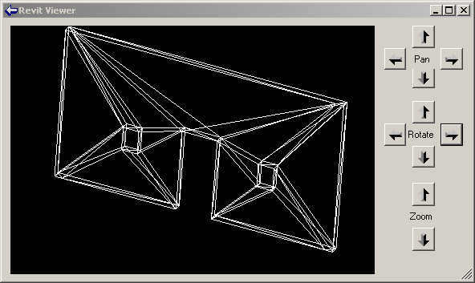
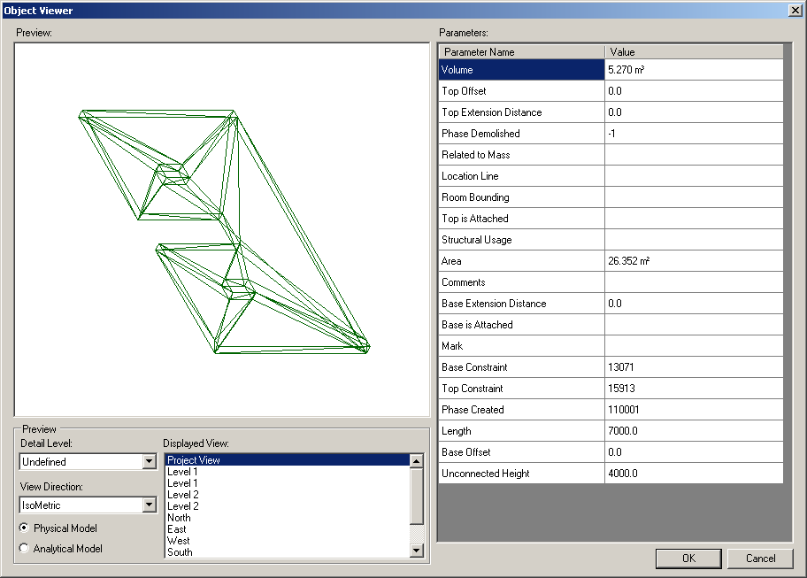

Geometry Viewers
The previous post provided an overview of the Revit geometry library and very briefly mentioned some geometry viewers provided in the Revit SDK samples. We will discuss these a little bit more before moving on to some own example code dealing with geometry.
The Revit SDK currently includes the following viewers:
- AnalyticalViewer
- ElementViewer
- RoomViewer
- RevitViewer
- ObjectViewer
All the viewers query a selected Revit element for some specific geometry, traverse it, break it down into simple line segments, and render those into a .NET System.Windows.Forms PictureBox. They can all be classified as pretty basic samples. The first four of these are all located in the subdirectory Viewers and are implemented in VB. They were introduced early on in the Revit API, with version 8.0. Of these four, the RevitViewer is a helper class, which implements the actual viewer window which is used by the other three to present three different views of certain subsets of the building model. ObjectViewer was introduced later, in the Revit 9.0 SDK, is written in C#, and defines its own rendering window. Below is an example of the form defined by RevitViewer; in this case, it is being driven by the ElementViewer sample. The form looks identical when driven by the AnalyticalViewer and RoomViewer samples, only the content displayed differs:

The AnalyticalViewer is for Revit Structure, to view the analytical building model. The analytical model is generally a simplified approximation of the building structure for structural analysis purposes, which is of most interest to the structural engineer. Revit Structure maintains the analytical model in parallel with the physical model, which is what architects and most other people are interested in.
ElementViewer is designed for all flavours of Revit and displays the standard element geometry.
RoomViewer is a viewer for displaying the two-dimensional outline of a room boundary.
Just like the three viewers, just discussed, ObjectViewer demonstrates viewing elements. It allows the user to select between the analytical and physical model, and also which view to display. You might thus say that it is a combination of the AnalyticalViewer and the ElementViewer with some additional features.

ObjectViewer includes both generic functionality usable in all Revit flavours, as well as some Revit Structure specific functionality. It displays a selected single element in a preview window and retrieves geometry from either the analytical or physical model. It also includes some additional useful odds and ends such as defining an own error message exception handling class and some unit handling functionality. ObjectViewer was originally introduced in Revit 9. Another very similar sample named ObjectViewerII was introduced in 9.1. ObjectViewerII was removed in the 2008.2 SDK update, being very similar to ObjectViewer.
For all of the viewers, the steps to run are similar: simply select the element whose geometry or the room whose boundary to display and start the external command. The analytical viewer will check whether any analytical model is available, which requires Revit Structure functionality. In the case of the ObjectViewer, all display views are listed, the detail level can be selected, and analytical and physical model can be switched.